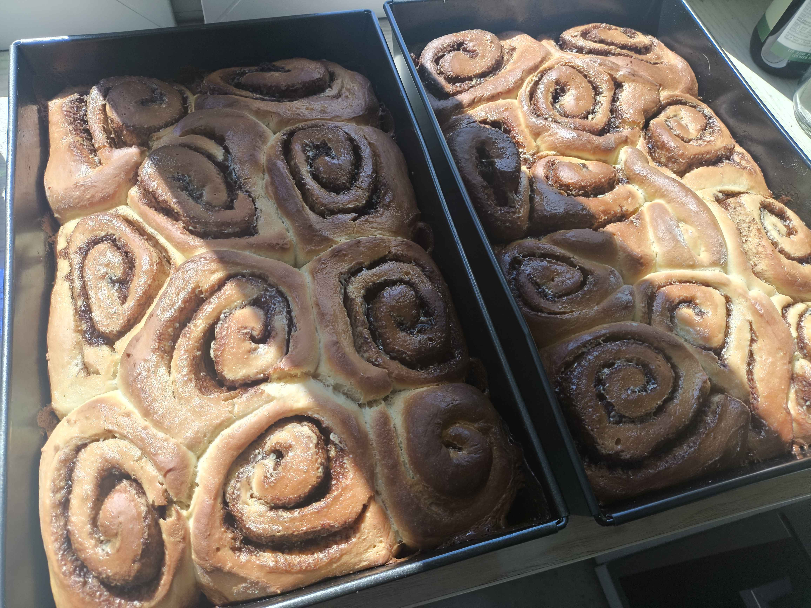

Back to Home
Cinnamon Rolls

Ingredients
For the Dough:
-
250 ml warm milk
-
8 g active dry yeast
-
2 large eggs
-
75 g melted butter
-
100 g white granulated sugar
-
5 g salt
-
530 - 600 g bread flour
For the Filling:
- 120 g softened butter
- 210 g brown sugar
- 15 g ground cinnamon
- 115 ml heavy cream
For the Icing
- 250 g powdered sugar
- heavy cream until desired consistency
- few drops of vanila extract
Steps
- Pour the warm milk (115ºF) in the bowl and sprinkle the yeast overtop. Allow this to sit for 3-4 minutes. The yeast will get a little frothy to show it is activated.
- Add the room temperature eggs, butter and sugar. Mix until combined.
- Add in salt and 4 cups (save the other ½ cup and add only if you need it) of flour and mix just until the ingredients are barely combined. Allow the mixture to rest for 5 minutes so the flour has time to soak up the liquids.
- Knead until the dough is elastic and smooth. Add flour if needed if needed to form a dough. **The dough should be tacky and will pull away from the sides of the bowl but may stick slightly to the bottom. That's ok! Don't be tempted to add more flour at this point. We generally add about 4 ¼ cups, but start with 4 cups.
- Scrape dough from the sides of the bowl.
- Set the bowl in a warm place and allow the dough to rise until double. I like to turn on the oven to the lowest setting for 1-2 minutes. Then turn off the oven and place the dough to rise in there. It normally takes about 30 minutes for the dough to rise. Do not allow the dough to rise too much or your cinnamon rolls will be airy.
- Sprinkle a pastry mat or work surface generously with flour. Turn out the dough onto the surface and sprinkle the top of the dough with additional flour.
- Flour a rolling pin and roll the dough to about a 24×15" rectangle. (the size of the rectangle can vary…it does not have to be exact!)
- Use a rubber spatula to smooth the cinnamon filling over the whole dough rectangle.
- Starting on the long side, roll the dough up tightly jelly roll style.
- Cut into 12 slices and place in a greased 9×13 baking pan.**** Cover the pan and allow the rolls to rise for 20 minutes while the oven is preheating.
- Preheat the oven to 190°C
- Warm the heavy cream until the chill is off. Don't make it hot…you just don't want it cold. It should be warm to the touch. Once the rolls have risen, pour the heavy cream over the top of the rolls, allowing it to soak down in and around the rolls.
- Bake in a preheated oven for 25 minutes, until the rolls are lightly golden brown and the center rolls are cooked through. Note…the time will vary based on how big the rolls are, what type of pan, how close the rolls are packed, etc. They could take up to 30 minutes. Check the rolls at 20 minutes. If they are getting too browned, cover loosely with foil for the remaining baking time
- While the rolls are cooling, prepare the icing
- In a medium bowl, whisk together the powdered sugar, heavy cream, and vanilla extract until smooth. Adjust the consistency with more cream or sugar as needed.
- Drizzle the icing over the cinnamon rolls before serving or when they're warm if you prefer rolls to soak up the icing.